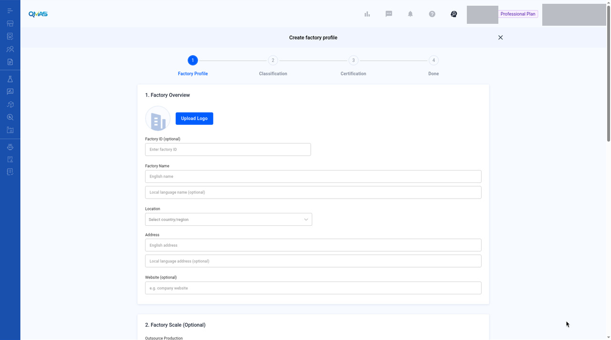
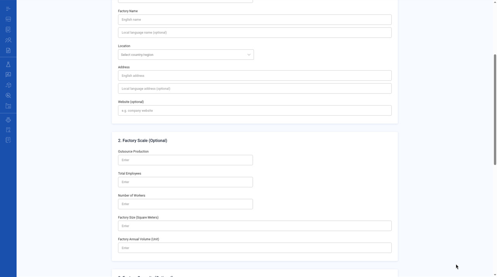
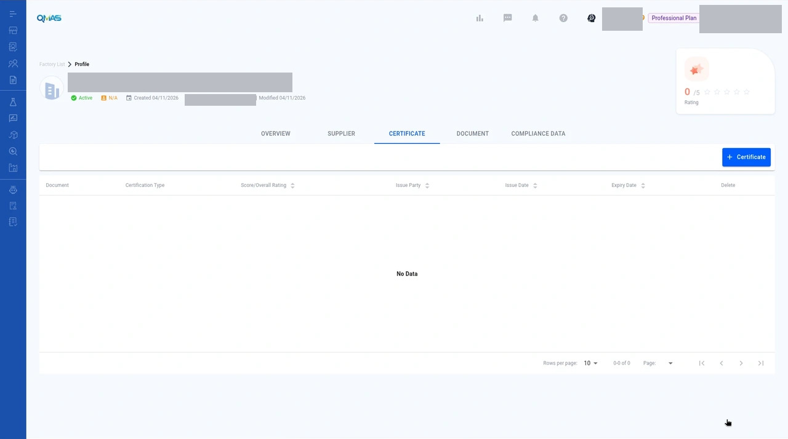

Factory Management — Create a Factory
Add a factory profile with its location, scale, equipment and certificates, so you can link it to suppliers, products and inspections.
Screenshot slots: 7 reviewed and 3 pending privacy review.
Overview
- Open Supplier / Factory Management, click the Factory tab, then Create Factory.
- Factory Profile: overview, scale, equipment and contact.
- Classification (optional): product category and tags.
- Certification (optional): add audit reports or certificates, then click Done.
- The factory profile opens.
Step-by-step
1. Open the Factory tab
In the left menu, open Supplier / Factory Management and click the Factory tab. It lists your factories with location, status and audit certificates.
Click Create Factory, or Import Factory to add many factories from a file.

2. Factory Profile — overview
- Upload Logo and Factory ID (optional).
- Factory Name: English name (required) and local-language name (optional).
- Location: country or region, then province and city.
- Address: English address (required) and local-language address (optional).
- Website (optional).

3. Factory Profile — scale and equipment (optional)
Factory Scale: outsource production, total employees, number of workers, factory size (square meters) and annual volume.
The equipment section lists machines and Automation Production Line entries: machine name, brand and model no., quantity and monthly production volume. Click Add for more rows.

4. Factory Profile — contact
Under 4. Contact, fill in the Contact person and an Email address with its type (Company, QA, Sales or Other). Contact no. is optional. Click Next.

If Contact person or the email type and address are empty, Next (not Submit) marks them required. The fields stay on example placeholders.

5. Classification (optional)
Click Select category for the product categories this factory makes, and Select tag for your own tags. Click Next.
Image pending privacy review
File name: 05-step2-classification.jpg
Reviewed replacement image not available yet. Follow the written steps above.
6. Certification (optional)
Click Add to attach an audit report or certificate. In Add Certification, choose the certification type, upload the file (JPG, JPEG, PNG, PDF, DOC or XLS), and fill in the score or overall rating, issue party, issue date and expiry date. Click Add.
Image pending privacy review
File name: 07-add-certification.jpg
Reviewed replacement image not available yet. Follow the written steps above.
Click Done to create the factory.
Image pending privacy review
File name: 06-step3-certification.jpg
Reviewed replacement image not available yet. Follow the written steps above.
7. Done — factory profile
QMAS shows “Create factory successfully!” and opens the factory profile. Use the tabs Overview, Supplier, Certificate, Document and Compliance Data to manage what is linked to this factory.
The reviewed screenshot is a readonly Overview of an existing profile. Product Category, Tag, Factory Capacity and Factory Scale are empty. It is not the Add Certification pop-up, and no record was written for this shot.


Tips
FAQ
- How do I create a new factory?
- Go to Supplier / Factory Management, click the Factory tab, then Create Factory. Fill in Factory Profile, then Next, Next and Done. Direct link: https://qmas.icw.io/supplier-manager/factory/create
- Can I add many factories at once?
- Yes. Click Import Factory on the Factory tab.
- Where do I upload a factory audit certificate?
- In step 3 Certification of Create Factory, or later from the Certificate tab of the factory profile.
Help Center additions and remaining gaps
Source-documented — edit, documents, and import (last edited 2026-01-16)
Source: Manage your QMAS Factory Compliance Profile, https://app.notion.com/p/2ea9c62c39fc80198eddc3c9e7d20007. Not marked “Updated November 2026”. Labels need a dev check.
Edit company and contact information with the icon next to each section. Edit categories and tags with the pen icon.
Add rating uses the same four dimensions as suppliers in the Help Center (Responsiveness, Quality, Pricing, Market Awareness). Confirm whether a factory rating still exists and still uses these labels.
Internal notes. Add missed certificates or documents later in the CERTIFICATE and DOCUMENT sections.
The Help Center text has typographical errors (“thisfactory”, “factyory”). Those are not UI labels.
Import Factory: click Import Factory, then Download here for the factory template, fill it in (the article says create, update, and delete are supported), upload, and click Next. A toast confirms completion. One Help Center step title still says “Upload the filled supplier template”. Treat that as a source typo unless dev shows that exact wording.
Do not blanket-replace “supplier” wording on Factory screens. A filed bug asks for a context-by-context check.
Remaining gaps
- Profile tabs Supplier, Certificate, Document, and Compliance Data are named, not walked through.
- Overview Product Category and Tag empty-state wording.
- List filters, Export, and the row toolbar.
- Screenshots for import, rating, notes, and tabs other than Overview.
Help Center reconciliation 2026-11-13 (HKT). Original Help Center not edited. This draft is not the public guide at the marconip2026 site. No Dify upload.